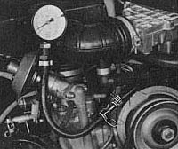

Fuel consumption too high
Test condition
- Standard tire size and type
- Air cleaner insert clean
- Wheels turning freely (brakes, wheel bearings)
- Ignition timing correct
- Road test has shown clearly that the fuel
consumption is too high
Pressure in ring main too high
- Connect pressure gauge
- Pull wire off coil terminal 1
- Operate starter
Specified pressure: 2.5 kg/cm2 (35 psi +/-2)

Pressure OK Pressure much higher